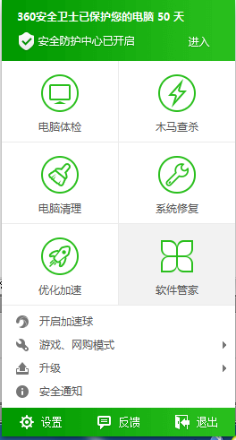
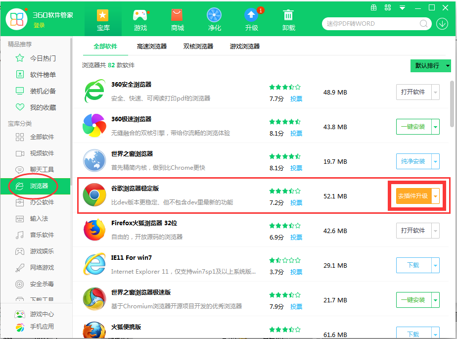
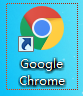
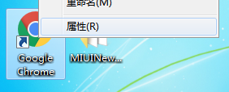
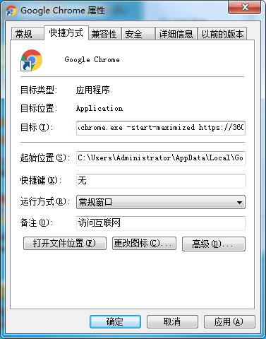

Google Chrome浏览器是目前世界上最先进、速度最快的浏览器，在安装了360之后可以快速的在电脑上使用Chrome：
通过右键点击任务栏的360图标：
即右击，出现如下菜单：

选择软件管家，即可在软件宝库的浏览器中找到我们常用的谷歌浏览器稳定版：

安装完成后，桌面会出现chrome的图标：
右击这个图标，选择属性设置： 
在目标的最后加上一个空格与代码： -start-maximized https://360.aqde.net

这样就可以最快的速度访问我们的主页了！
基于AQde [360]
架构为您提供快速安全高效的用户体验。 ©2017
Powered by AQde.net